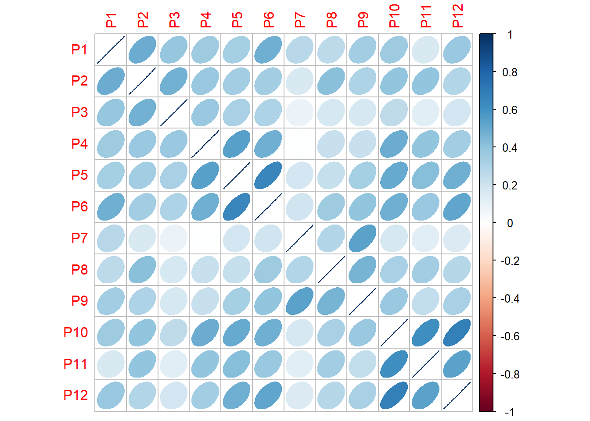
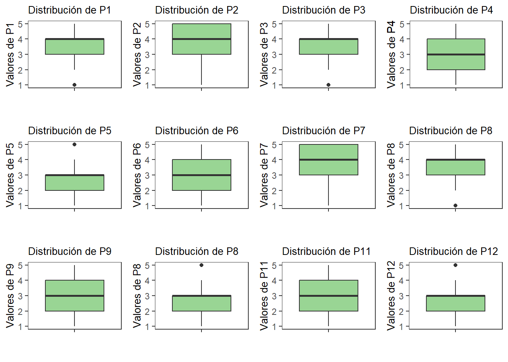
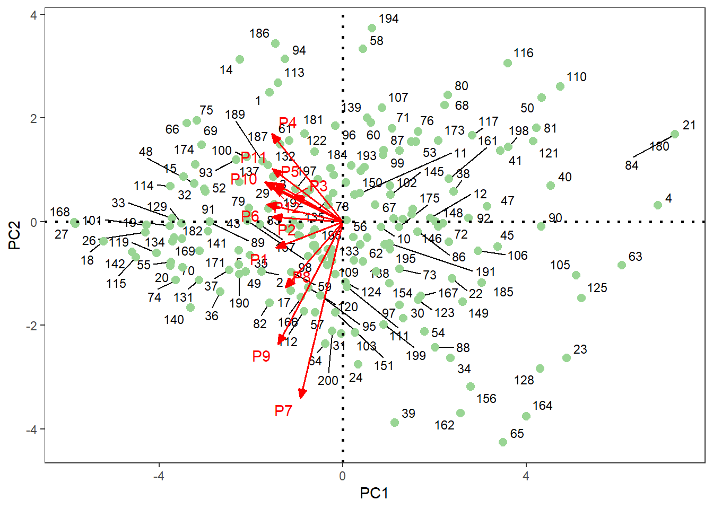
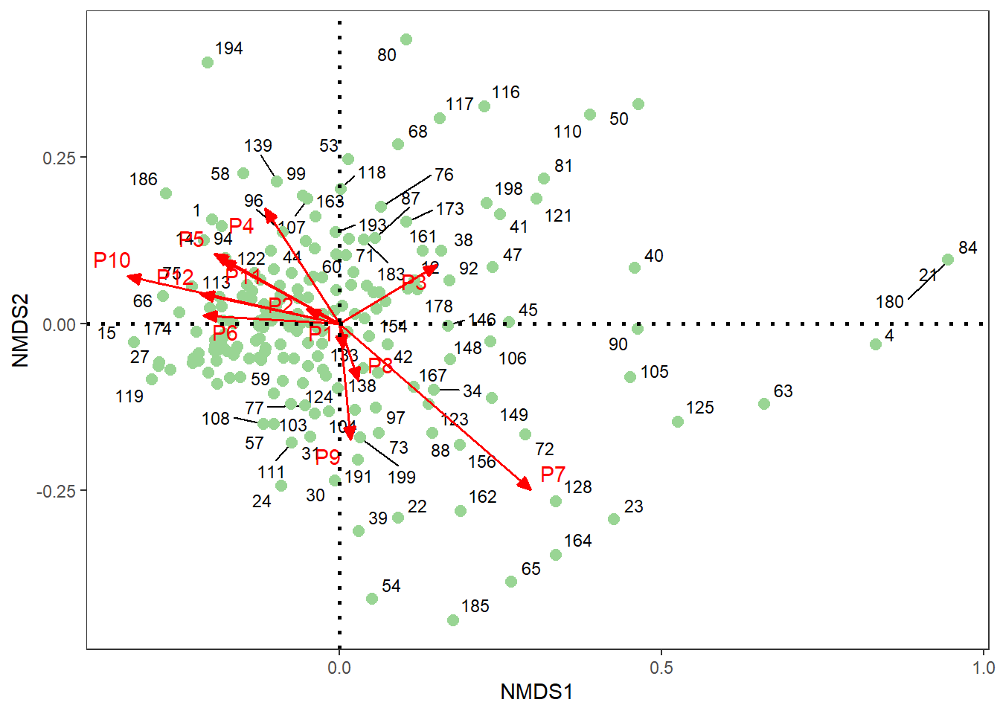

Paso 1. Cargar Librerías
Librerías requeridas para el PCA.
Paso 2. Base de datos de estudiantes encuestados
La Tabla 1 muestra la oranización de los datos, de las enncuestas realizadas a los estudiantes.
| Estud | P1 | P2 | P3 | P4 | P5 | P6 | P7 | P8 | P9 | P10 | P11 | P12 |
|---|---|---|---|---|---|---|---|---|---|---|---|---|
| 1 | 5 | 5 | 5 | 5 | 5 | 4 | 2 | 4 | 2 | 2 | 2 | 2 |
| 2 | 3 | 5 | 3 | 3 | 3 | 3 | 5 | 3 | 5 | 3 | 4 | 4 |
| 3 | 4 | 5 | 5 | 4 | 2 | 3 | 4 | 5 | 2 | 3 | 3 | 3 |
| 4 | 1 | 1 | 1 | 1 | 1 | 1 | 3 | 1 | 1 | 1 | 1 | 1 |
| 5 | 5 | 5 | 4 | 4 | 2 | 4 | 5 | 4 | 4 | 3 | 4 | 2 |
| 6 | 3 | 4 | 2 | 3 | 3 | 3 | 4 | 5 | 4 | 2 | 4 | 2 |
Paso 3. Exploración gráfica
La Figura 1 muestra que hay pocas relaciones lineales entre las doce variables

La Figura 2 muestra la distribución de los datos por cada una de las doce variables

La Figura 3 muestra la comparación en la distribución de los datos de las doce variables.

Paso 4. Análisis de componentes principales - PCA
La Figura 4 muestra como las doce variables caracterizan a los estudiantes encuestados, basado en relaciones euclideanas. No hay un patrón de relación claro entre los estudiantes y las doce variables, dado las pocas relaciones lineales visualizadas (ver Figura 1).

Paso 5. Análisis de escalamiento multidimensional no métrico - NMDS
La Figura 5 muestra como las doce variables caracterizan a los estudiantes encuestados, basado en relaciones semimétricas con la distancia Bray Curtis. Mejora un poco el desempeño, comparado al PCA, aunque no se visualiza un buen gradiente.

Otros análisis recomendados
Sugiero los siguientes análisis:
Análisis de correspondencias simples (CA), similar al PCA (Figura 4), pero con relaciones tío chi cuadrado.
Análisis de Clúster (CLA), para visualizar grupos o k-clúster de estudiantes, basado en las variables que lo caracterizan. Esto es importante en caso de que se pretenda identficar agrupamientos entre los estudiantes encuestados.
Análisis discriminante lineal (LDA), para optimizar la separación de los grupos de etudiantes generados en el CLA y mejorar el desempeño gráfico.
Permanova. análisis de varianza multivariado, basado en permutaciones, para probar si existen diferencias estadísticas entre los grupos creados en el clúster (CLA).